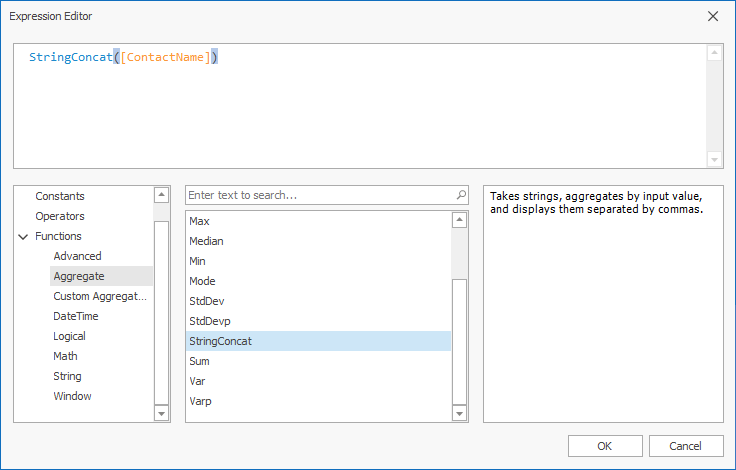

Summary Level Aggregations
The Dashboard Designer aggregates data when you construct a calculated field expression. This allows you to evaluate calculated fields on a summary level.
In the Dashboard Designer, you can use the following set of predefined aggregate functions:

| Function | Description |
|---|---|
| Aggr(SummaryExpression, Dimensions) | Aggregates underlying data using the detail level specified by a predefined set of dimensions and a specified summary function. For more information, see Intermediate Level Aggregations. |
| Avg(Value) | Returns the average of all the values in the expression. |
| Count() | Returns the number of values. |
| CountDistinct(Value) | Returns the number of distinct values. |
| Max(Value) | Returns the maximum value across all records. |
| Min(Value) | Returns the minimum value across all records. |
| Median(Value) | Returns the median of the values. |
| Sum(Value) | Returns the sum of all values. |
| Var(Value) | Returns an estimate of the variance of a population where the sample is a subset of the entire population. |
| Varp(Value) | Returns the variance of a population where the population is the entire data to be summarized. |
| StdDev(Value) | Returns an estimate of the standard deviation of a population where the sample is a subset of the entire population. |
| StdDevp(Value) | Returns the standard deviation of a population where the population is the entire data to be summarized. |
These functions can be used for all types of numeric fields. After creating such calculated fields, you can use them as measures in an OLAP cube.
Custom Aggregate Functions
Along with the predefined aggregations (like Min, Max, Sum, Avg), the Dashboard supports custom aggregation functions. A custom aggregate function appears in the Expression Editor's categories if the function was registered in your application.
The following image illustrates the custom StringConcat function in the Aggregate function’s category:

Names of custom aggregate functions are stored in the Custom Aggregate Names category and can be used as arguments when you create window calculations as WindowAggregate and RunningAggregate.
Refer to the following topic for detains: Calculation Functions Reference.